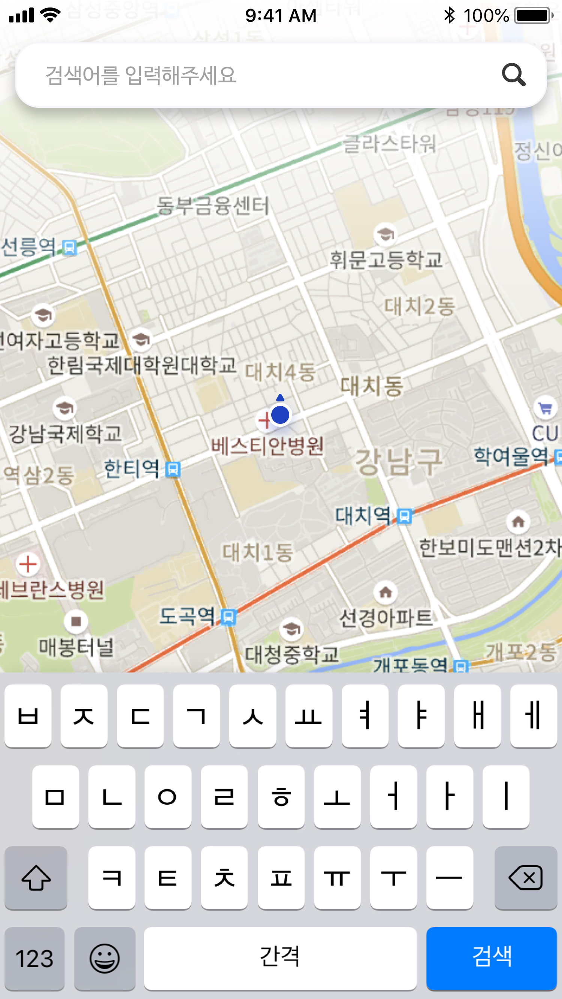
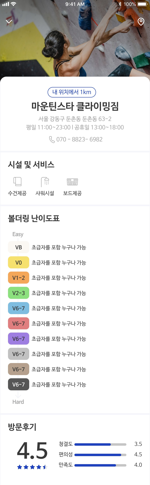
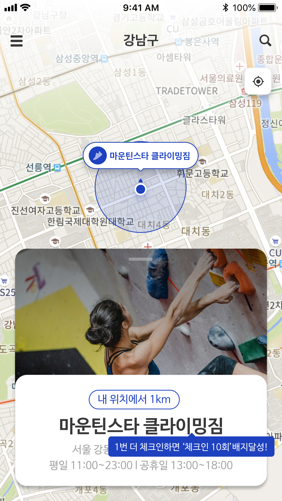

Feature 02 · Clarity Information
가설은 정보 부재를 예상했지만, 실제 문제는 의사결정에 필요한 정보의 종류가 달랐다



지인 추천, 블로그, 카카오톡에 흩어져 있던
클라이밍장 정보를 앱 하나로 해결한다.
Research Insight
인터뷰 참여자 8명 모두 새 클라이밍장 정보를 지인 추천이나 블로그에 의존하고 있었다. 정보가 흩어져 있어 방문 전 확인이 번거롭다.
암장 이름 또는 지역으로 빠르게 원하는 클라이밍장을 찾는다
헤매던 정보를 상세 페이지 하나에서 모두 확인한다
실제 방문 경험이 커뮤니티 정보로 쌓여 다음 방문자에게 전달된다